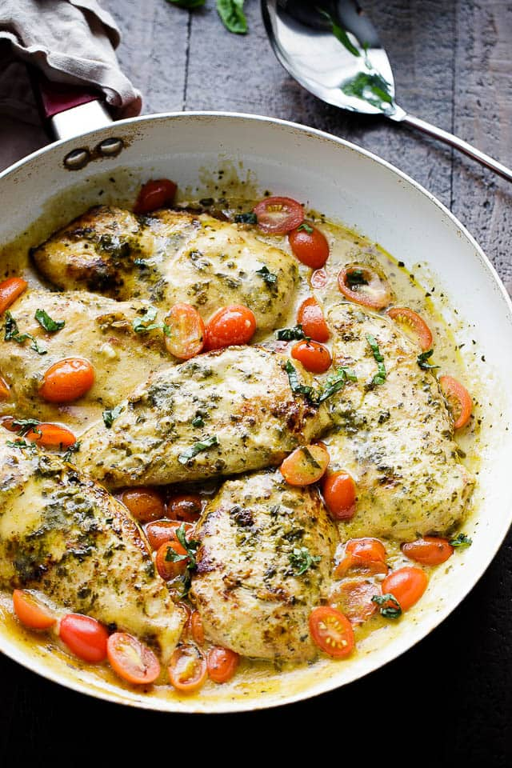

Creamy Pesto Chicken Recipe

Ingredients
- 2 boneless, skinless chicken breast (about 1.3 lb. total)
- 1/8 tsp salt
- 1/8 tsp pepper
- 2 Tbsp olive oil, divided
- 2 cloves garlic, minced
- 1 pint grape tomatoes, sliced in half
- 1/2 cup heavy cream
- 1/4 cup pesto